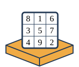
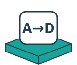

MATHS WEDNESDAYS
Play with an idea.
Choose an activity. Try something out. See what you discover.
Puzzles & strategy
Creature studio
Draw a route, change a creature and investigate how it moves.
A gallery inside itself
Explore repeating pictures, spirals and transformations.
String & Stitch Lab
Make curves with straight strings, twist a tower of rods and explore stitch patterns. Five linked investigations.
Code Grid
Tap to build Python commands. Move a robot, draw shapes and explore loops, one step at a time.
Painted Cubes
Paint a cube, then sort its pieces by how many faces are painted.
Curve Lab
Race ramps, plot a curve by touch, shoot ellipse pool and focus a radar dish.
River crossing
Transport the wolf, goat and lettuce safely. Then try larger loads and more cargo. Choose every challenge from one play page.
Mastermind
Choose your colours and holes. Play against a secret code, or get help with a physical game.

15 game
Take cards from a row into your hand. Two players or a computer opponent; a separate magic-square page reveals the connection.
Dobble
Build seven matching cards from seven points. Explore why each pair shares one symbol, then play solo or race a friend.
Josephus
Ace to King in a circle. Keep one, remove one. Which card will remain?
Hanoi
Move the discs from peg A to peg C. Can you find the fewest moves? Choose from one to eight discs.
Bridge Lab
Build a truss bridge, inspect tension and compression, then increase the load to test its limits.
Sprouts
Join dots, grow new ones and plan your next move.
Robot Trails
Snap together commands and repeat loops. Guide your robot through nine trails.
Practise & remember
More challenges
Multiply to the target
Start at 1. Take turns multiplying by 2–9. First to reach or pass the target wins.
Chase & escape
Watch points chase one another, or steer an escaping point away from its pursuers.
The divisor game
Take a number; give its remaining proper divisors to your opponent. Two players compete for the highest score.

Secret messages
Encode, decode and crack Caesar ciphers. Explore all 26 shifts of the alphabet.